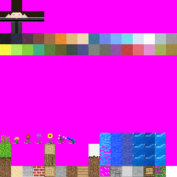
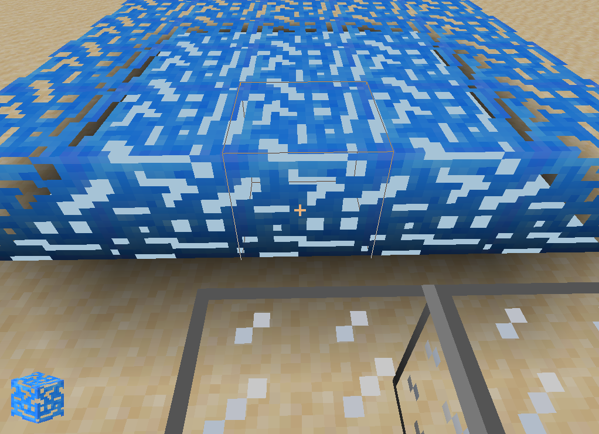
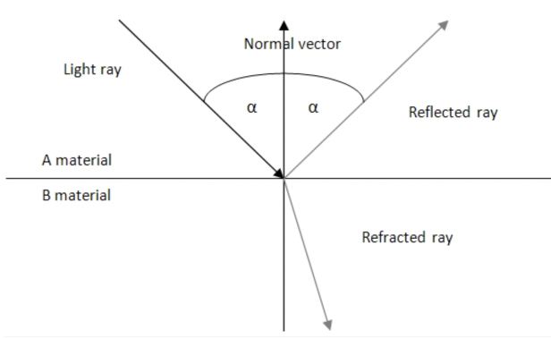
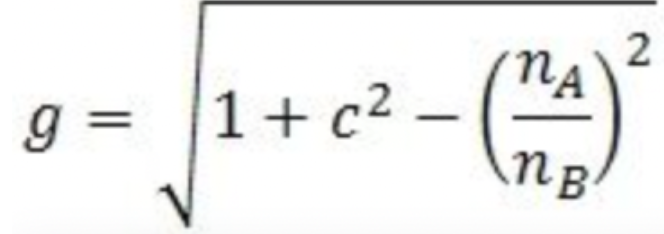

The aim of our project is to develop new shaders for Minecraft which allows for a more realistic gaming experience. In particular, we are trying to make water look more realistic with regards to color shifting at depth, refraction, and reflection. In general we aim to make water in minecraft more dynamic.
So far, we made some progress in our research phase by looking into the physics of reflection and reflection in water and by experimenting with a minecraft clone, Craft, where we attempted to simulate a water block (since they don't have on built-in) that we can test our shaders on.
|

|

|
While this is far from what we hope the final product will be, we have a better understanding of how the program handles connected blocks, blending, vanishing points, transparency, and reflection. From here we can begin to move forward towards more detailed renders.
We also did some preliminary research into how light behaves through refraction and reflection. A Fresnel term/equation tells us how much light is reflected and refracted when it crosses a border between different media, namely between water and air. We can apply the Freshenl term to find reflection and refraction textures. A diagram of this behavior is shown below, along with the equation to calculate the Fresnel term:
|  |  |
where na and nb are the refraction coefficients of materials A and B, and c is the
term calculated by the following equation:
This is also somewhat behind schedule as we had hoped to implement rudimentary refraction and reflection algorithms by this point. As such, we have adjusted our goals so that our simulation of water is less dynamic than we'd hoped. We are also limited by the hardware limitations associated with rendering water in real time, meaning our renders may be less detailed than originally intended.
Here is our updated schedule with the above in mind. We believe our previous goals are still largely attainable, but we may lose some detail and dynamicism:Friday, April 12: Do research on water properties such as reflection, refraction, and waves. Connect a Minecraft world to our code.
Tuesday, April 16 [Milestone]: Have some basic shaders to understand transparency, and how light is handled in the minecraft clone.
Friday, April 19: Apply feedback that we got Apply rudimentary reflection/refraction model Understand how blending works to adjust shading depending on camera position Understand how shaders work in the minecraft clone currently
Tuesday, April 23: Keep working on reflection/refraction model Improve coloring accuracy
Friday, April 26: Improve speed and efficiency of our program Work on vertex displacement for bigger waves
Monday, April 29: Record video + write report with one buffer day